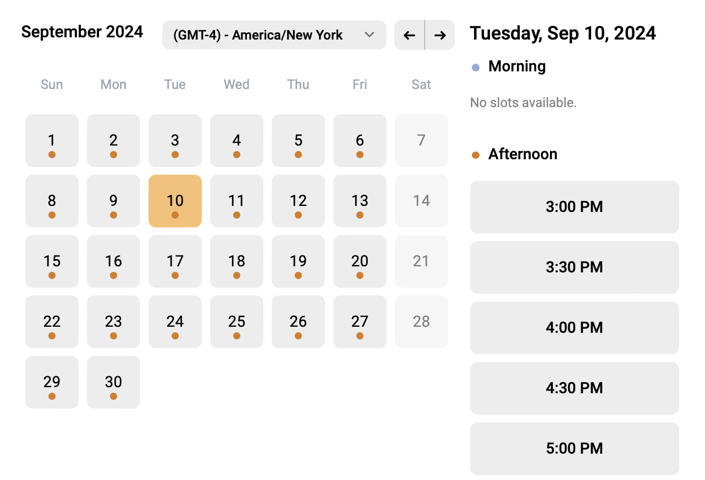
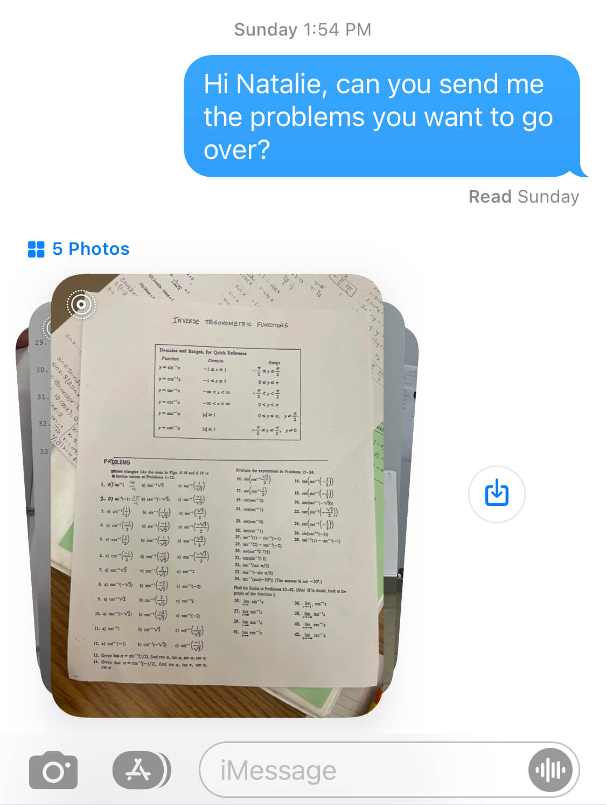
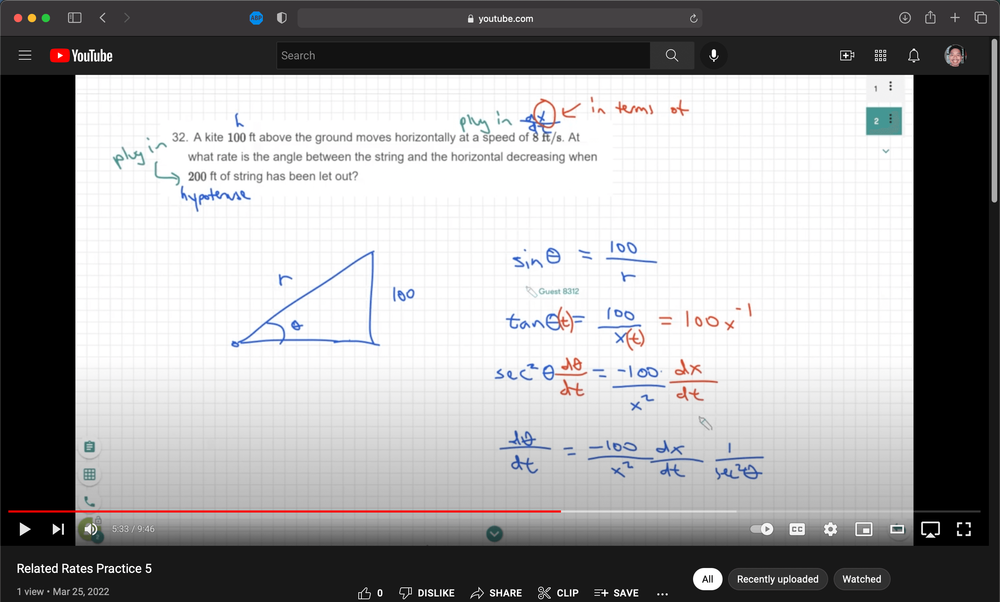

A Modern and Convenient Tutoring Solution
for Students and Parents
Easy to set up tools, ready to go in minutes!
Book a time
Students find an opening on my calendar or set up a regular meeting time. Available evenings and weekends.


Send me the problems
Students then take pictures of their homework and text or email them to me so I can prepare the lesson.
Start tutoring!
I give students a call on Zoom and send them the whiteboard link to start the session.

Rewatch Tutoring Sessions
Tutoring sessions are recorded, so students can rewatch them via private YouTube link.
Access client portal
Students can review past material and parents can keep track of time spent and payments through their Practice account.